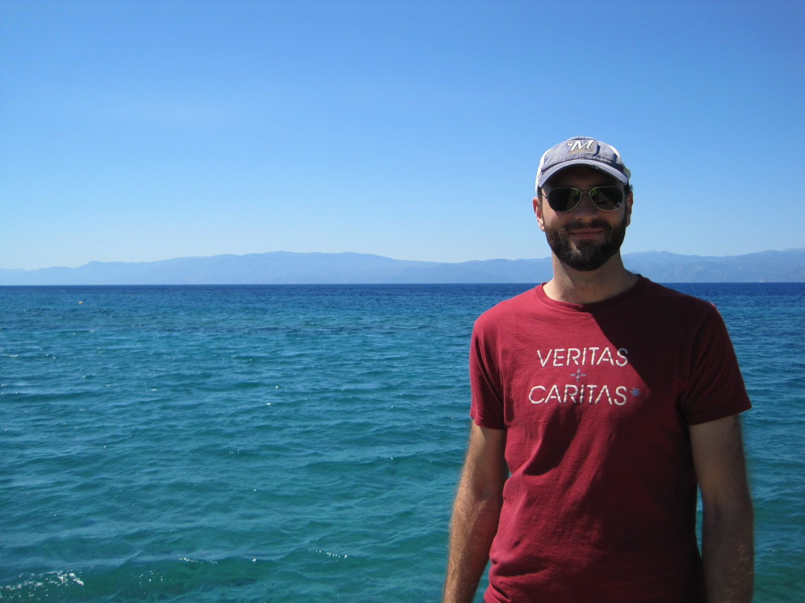

Who does this work?
PI: Brett Kroncke, Ph.D.
For the last ten years, I have developed experimental and computational methodologies to study membrane protein structure and flexibility. At the University of Virginia, I focused on the techniques of electron paramagnetic resonance (EPR) and crystallography. At Vanderbilt, I have focused on investigations of membrane proteins involved in human disease, including the KCNQ and KCNE potassium channel α and β subunits. The last two years of my training focused on learning from experts in the fields of cardiac arrhythmia genetics (Dan Roden), and computational phenotype-predictive modeling (Jens Meiler and Jeffrey Blume) to construct predictive models of ion channel phenotypes and validate the resulting predictions. Contact me: brett.kroncke@gmail.com.